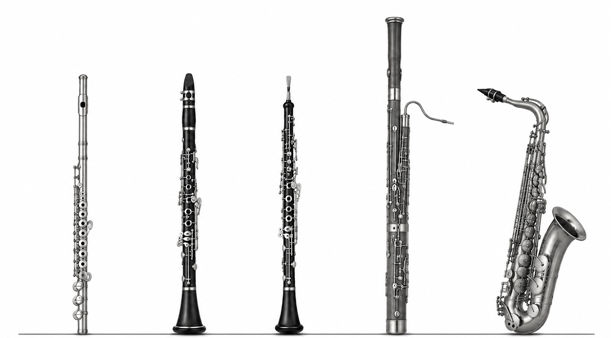
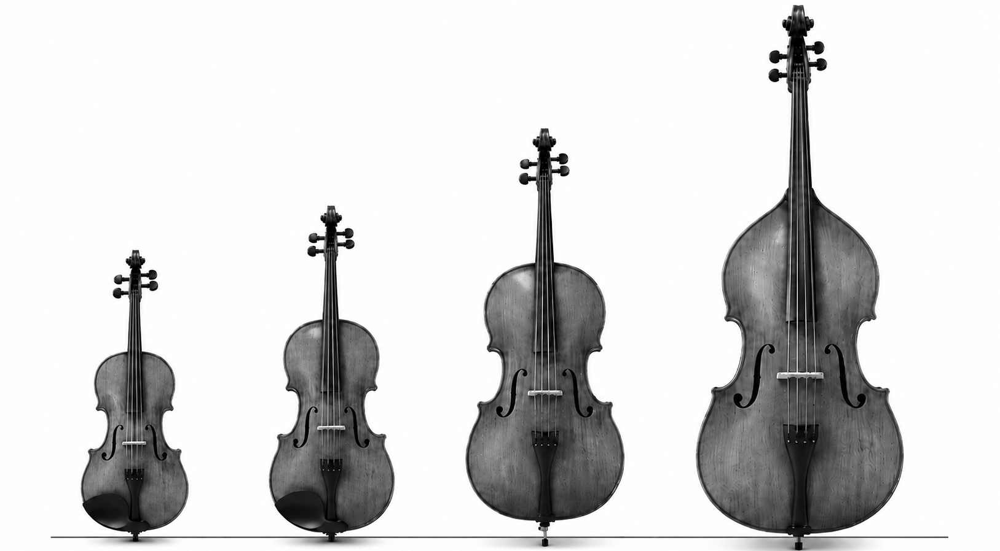
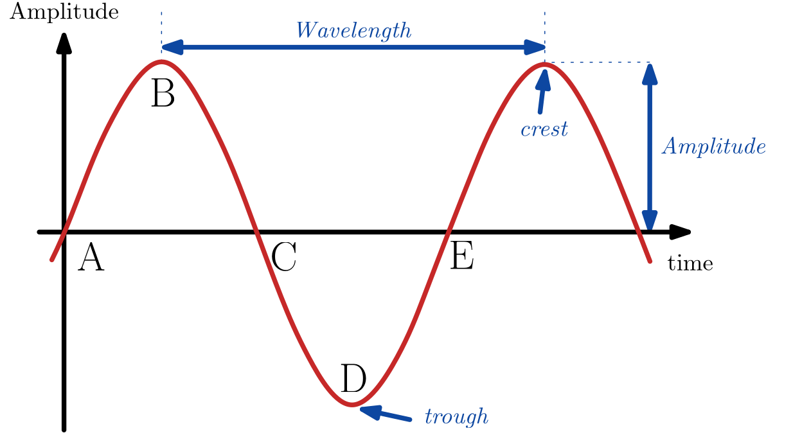
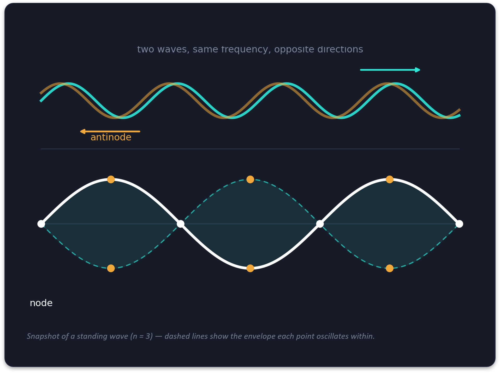
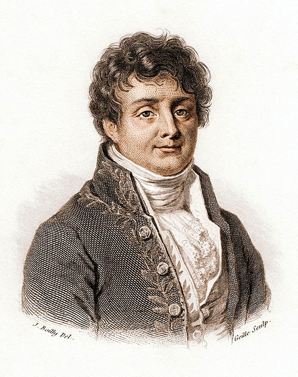

The Science of
Music
The Science of Music
Science vs Music
Different worlds, or shared connections?
Science vs Music
Different worlds, or shared connections?
How do different instruments produce sounds?
Let's hear it from the musicians!
Sound Production
How do different instruments produce sounds?
Woodwind Instruments
Create beautiful sounds when air vibrates
How do they work?
When you blow into the instrument, it sets the air inside into vibration. These vibrations travel through the instrument and out through the opening to create sound.

Woodwind Instruments
Create beautiful sounds when air vibrates.
Stringed Instruments
Create beautiful sounds their strings vibrate
How do they work?
A string is stretched between two points. When it is bowed or plucked, it vibrates. These vibartions travel through the body of the instrument and make the air vibrate, creating sound!

Stringed Instruments
Create beautiful sounds their strings vibrates.
Signal Processing
The science of understanding and analysing signals, such as sound, to uncover the information hidden within them.
Signal Processing
The science of understanding and analysing signals, such as sound, to uncover the information hidden within them.
The Sine Wave
The Simplest Signal
Frequency = pitch
Amplitude = loudness

The Sine Wave
Frequency equals pitch. Amplitude equals loudness.
Standing Waves
What happens when a string vibrates
Resonance
Occurs when two waves of the same frequency travel in opposite directions.
Nodes: points of zero motion
Antinodes: points of maximum motion

Standing Waves
Nodes are points of zero motion. Antinodes are points of maximum motion.
Mathematics
Helps us understand the hidden structures of sound and shows us how simple waves combine to create beautiful musical sounds.
Jean-Baptiste Gauci Fourier
1768 - 1830, France
A complex periodic pattern can be built from simple sine waves


Jean-Baptiste Fourier
A complex periodic pattern can be built from simple sine waves.
The Fourier Series
A mathematical recipie that explains how signals are built from single sine waves
The Ingredient List
\(\omega_0\) The fundamental frequency
\(n\omega_0\) The harmonic frequencies
\(a_n, b_n\) How much of each component is present
Standing Waves
Nodes are points of zero motion. Antinodes are points of maximum motion.
One sound, two equivalent descriptions
Scafolding musical sounds by comining simple waves
TIME DOMAIN
\(y(t)\)
The Waveform
FOURIER ANALYSIS
\(\rightleftarrows\)
Analysis/Synthesis
FREQUENCY DOMAIN
\(Y(f)\)
Frequency Spectrum
Mathematics does not replace the music; it reveals part of its hidden structure
Standing Waves
Nodes are points of zero motion. Antinodes are points of maximum motion.
We Are Free
Gladiator
Elisa Sacco
Eliza Brincat
Maya Ungaro
Christopher John Mercieca
Contact Us
Contact details placeholder from the original slide.